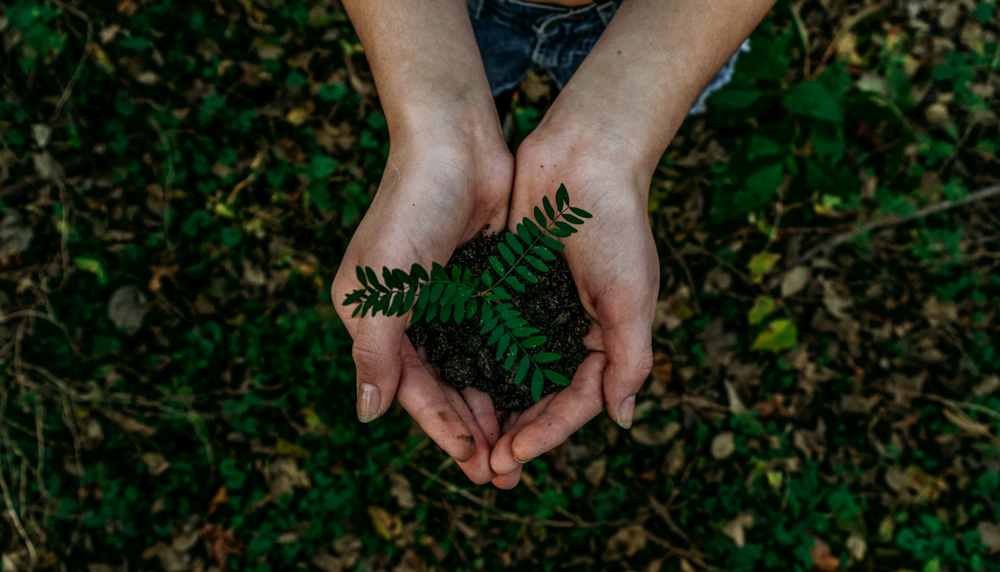

Cuidar do planeta é cuidar do nosso futuro

Meio ambiente é o conjunto de todos os elementos que compõem o espaço em que vivemos e que tornam possível a vida. Ele engloba a natureza, como o ar, a água, o solo, as plantas, os animais e o clima, além dos elementos criados pelo ser humano, como as cidades, as construções e as atividades econômicas. Também inclui as relações sociais e culturais.
Contribui para a conservação da biodiversidade, protegendo espécies e garantindo recursos essenciais como água, ar puro e solos férteis.
Promove um ambiente mais saudável, com melhores condições de vida, saúde e bem-estar para a população.
Mantém a harmonia entre os seres vivos e a natureza, reduzindo impactos ambientais e climáticos.
Email: dayane.6982@aluno.pr.senac.br